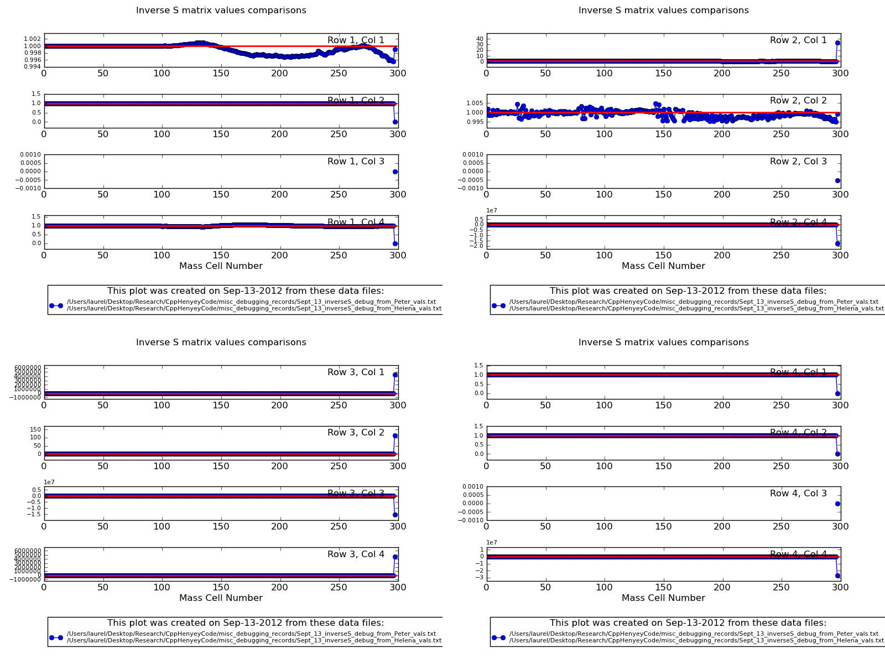
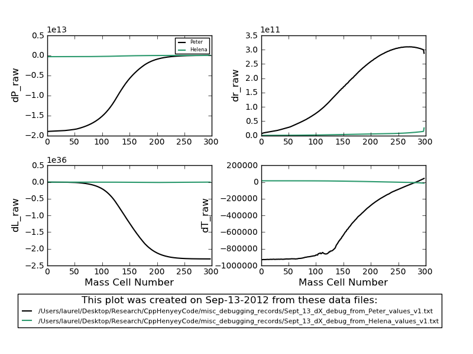
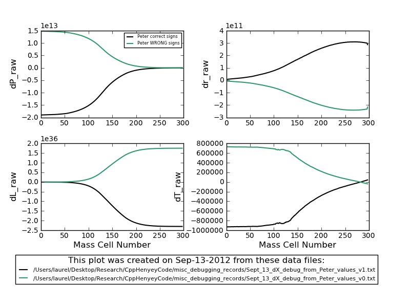
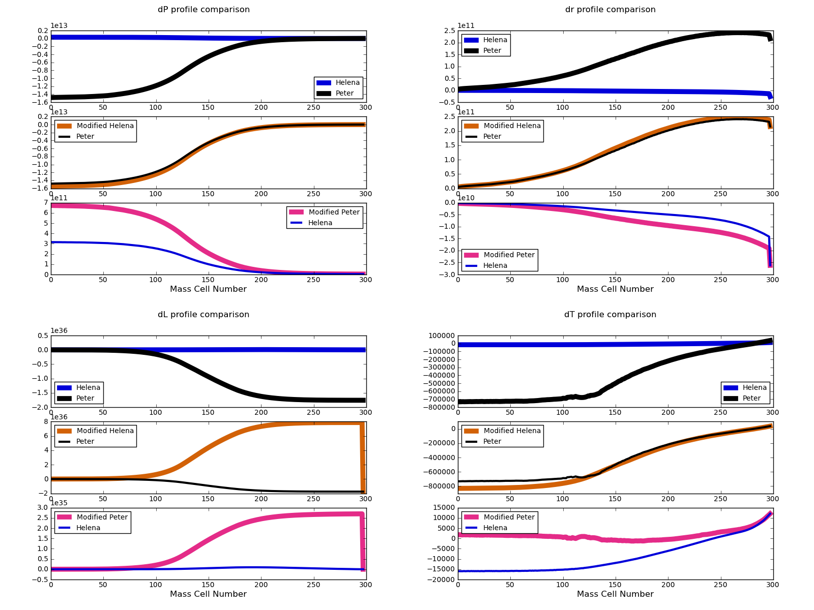
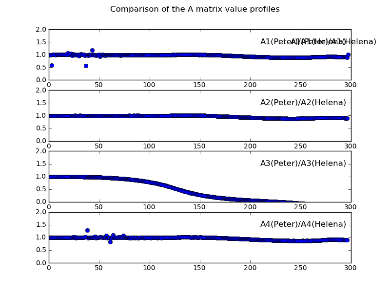

Date & Time: Sept. 15, 2012
Location: campus
Computing context: MachoMac
(/Desktop/Research/CppHenyeyCode/src, /Desktop/Research/BodenheimerCode/UnalteredCode)
From last time:
Interestingly, in Peter's values, B32 and B33 !=0, while they do =0 in the Helena value-based calculations
This suggests that it must be the InverseS, row 3 that's causing the difference between the 2 codes
Check this by comparing the InverseS values in the same way as I just did for the B matrices:
Use Helena vs. Peter-generated CDEG values, and have Helena run them through its modifiedHenyey... subroutine, then print out the InverseS values generated from each pass and plot/compare the two.
Done. See Figure 1 for details. I don't notice any striking differences b/w the InverseS profiles around j=0, so it's still unclear what's causing the B (and A) profiles to start varying so much there.

A comparison of the InverseS values Helena generates
from Peter's CDEG values, vs. from the CDEG values it calculates
itself.
Figure
1:
I wonder if the sign differences b/w the Peter and Helena calculations are caused by not multiplying the PeterCDE values by -1.0 when I read them into Helena?

Figure
2
Results
in Figure 2. As you can see, the dX profiles STILL do not agree.
For further comparison, Figure 3 shows how the dX profiles differ when I use the Peter CDEG starting values both with (correct sign) and without (WRONG signs) multiplying the CDE matrices by -1.0 before sending them off to the modifiedHenyey... subroutine to calculate the dX values. Notice that the two profiles are NOT exact mirror images of each other. If you plot their ratios, you'll see the results wiggle about -0.75, and NOT -1.0 as you might naively expect.

Figure
3
To Do Today:
Start tomorrow by multiplying the CDE matrix values (generated by Helena) by -1.0 before sending them off to the modifiedHenyey... subroutine, and see if maybe THAT will get the dX profiles to agree with each other.
It makes no difference. The results of the dX calculations are the same, except that the dX profiles differ by a factor of -1.0 between the two Helena-generated CDEG cases. The overall dX values from the Helena-generated CDEG calculations, however, are still several orders of magnitude smaller than the dX values generated from the Peter-calculated CDEG values.
It's odd that in this case, the resulting dX profiles differ by a factor of -1.0, while switching the signs on the Peter-generated CDE values leads to dX profiles that differ by a factor of roughly -0.75 (the ratios 'wiggle' more, there, than they do in this case. For the opposite-sign CDE Helena-made values, the dX ratio is exactly and steadily -1.0 for all four dX values.)
The dP and dT profiles differ most markedly at j=0, when comparing results from the Peter-generated- vs. Helena-generated-CDE dX profiles. The dL and dr profiles, on the other hand, vary most markedly at j=jMax.
Maybe look into the dP and dT values generated at j=0 from the A/B/S/InverseS/Sum matrices from the different CDE inputs.

Summary of the effect
that changing JUST the outermost A value(s) has on the resulting dX
profiles.
The top graphs in each
plot contains just the regular Helena and Peter dX profiles.
The middle graphs
compares the regular Peter dX profile with the Helena profile where
ONLY the outermost Helena A matrix values were set equal to the
outermost Peter A matrix values.
The bottom graphs
compare the regular Helena dX profile with the Peter profile where
ONLY the outermost Peter A matrix values were set equal to the
outermost Helena A matrix values.
Figure
4
Figure 4, above, shows the effect that changing JUST the outermost A value(s) has on the resulting dX profiles. The top graphs in each plot contains just the regular Helena and Peter dX profiles. The middle graphs compares the regular Peter dX profile with the Helena profile where ONLY the outermost Helena A matrix values were set equal to the outermost Peter A matrix values. The bottom graphs compare the regular Helena dX profile with the Peter profile where ONLY the outermost Peter A matrix values were set equal to the outermost Helena A matrix values.
Except for the dL profiles, changing JUST the outermost A matrix values goes a long way towards getting the remainder of the dX profiles to agree with each other. If you set the outermost Peter A matrix values to the outermost Helena A matrix values, you end up with a more 'Helena-ish' set of dX profiles. Likewise, if you set the outermost Helena A matrix values to the outermost Peter A matrix values, you get a more 'Peter-ish' set of dX profiles. Except for the dL case, the value of the outermost A matrix values (Helena or Peter) largely determines whether the resulting dX profile will be more 'Peter-ish' or 'Helena-ish.'
The fact that performing this outermost A-values switcheroo does NOT make the dX profiles match perfectly, along with the dL profiles' resistance to correction through this method, makes me think that the A values that depend on the luminosity values (and derivatives thereof) may play an important role in these calculations, too. To test this, I looked at how the A values compare between the two codes, in for ratio values that fall between 0 and 2. (The main place where the ratio diverges from 1 is at the outer boundary, which the step above corrects.) The results are plotted in Figure 5, below.

Figure
5
What Figure 5 shows that the A values that depend on luminosity (and derivatives thereof) systematically differ between the Peter- and Helena-generated CDEG inputs. This is (at least partly) why 'fixing' the outermost A values, by setting them to their Peter-values, does not fix the dL profile at all, and possibly also why it doesn't entirely fix the other profiles.
I wonder if row3 and col3 of the B matrix reflect this, and if setting them to their Peter-values would get all the dX profiles to match even better...
Compare the ratio of row3 of the B matrix values, and the ratio of col3 of the B matrix values b/w the two codes, and see if you get anything interesting (vs. comparing the ratio of the other rows/cols from the B matrices).
A preliminary look at this shows that row/col3 of the B matrices do differ in significant ways (moreso than the other row/cols do). Tomorrow, start by examining what happens to the dX profiles when you set the Helena B matrix (row/col3) values to the Peter values, and whether/how much of a difference it makes.
Update wordpress blog
Back up fortran and cpp codes to BitBucket
To keep in mind for later:
For the 1 Mjup model: do the Peter and Helena models' dX values (raw) now agree, too?